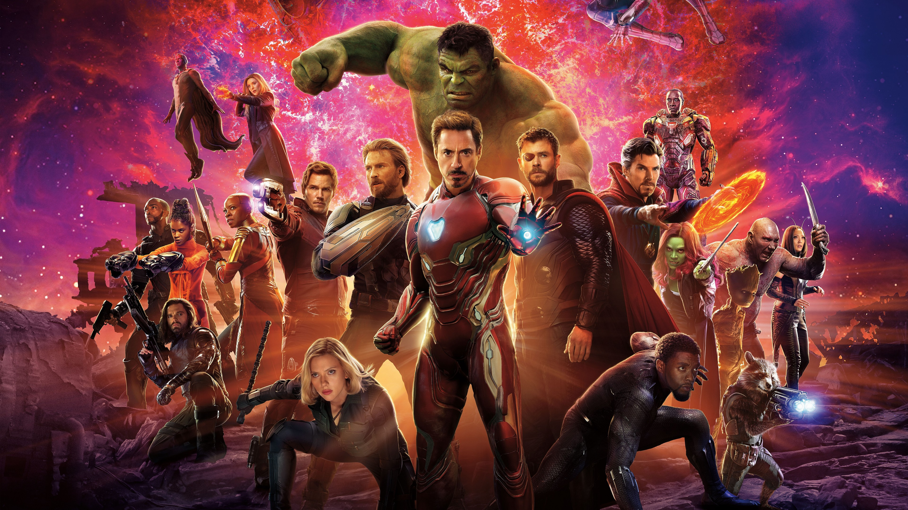

인피니티 워 이후 절반만 살아남은 지구 마지막 희망이 된 어벤져스 먼저 떠난 그들을 위해 모든 것을 걸었다! 위대한 어벤져스 운명을 바꿀 최후의 전쟁이 펼쳐진다!

저스티스 리그처럼 멤버들의 기원이 다양한 것이 특징. 자격이 된다 싶으면 뮤턴트이든 메타휴먼이든 영입한다. 그리고 정부기관, 특히 실드와의 관계가 강한 것도 특징. 이는 시빌워 이후에 특히 심해서, 마이티 어벤저스의 리더인 아이언맨이 실드 국장까지 할 정도였다. 지금도 실드 내에서 운영중인 시크릿 어벤저스가 있는 상황. 탈퇴라는 개념이 없어서 가입했다가 더 이상 어벤저스와 함께 하지 않거나 다른 팀으로 이적한 멤버도 비활동 멤버로 처리한다. 모여서 싸울 때는 AVENGERS ASSEMBLE![2]이라는 구호를 외치는 것을 관례로 하고 있다. 최초로 이 구호를 외친 건 토르. 시네마틱 유니버스에서는 뉴욕전투에서 헐크가 레비아탄을 작살내고 멤버들을 한 바퀴 돌려줄때의 챕터 이름이 바로 AVENGERS ASSEMBLE. 블루레이나 DVD로 확인할 수 있다. 에이지 오브 울트론의 마지막에선 멤버들 앞에 선 캡틴 아메리카가 "Avengers!" 하고 부르는 장면에서 끝나서(잘 보면 그 다음 단어를 말하려는 듯 입을 벌린 채 숨을 들이켜는 부분에서 딱 끝난다.) 그 후 어벤져스: 엔드게임의 클라이막스에서 캡틴 아메리카가 최후의 전투를 개시하며 드디어 외쳤다.